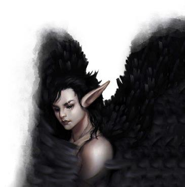

卓姆的人口多样性令人咋舌。除了属于该地文化的智慧生物外，这地方还是众多怪兽和异兽的家园。在某种程度上，这是由于古代的异变魔和近代时织肉者蒙丹(Mordain Fleshweave)研究试验的影响。在这里还有数量众多的显能区域以及通往凯博尔的通道。但最重要的是，这里几千年以来都是一块边远之地。科瓦雷的中部地区长期以来是强大文明的摇篮，随着时间的推移。当人们积极努力消灭能引起威胁的危险时，有一些怪物被消灭了，有一些则是被驱逐了，恰好卓姆就是它们被流放的地方之一。像过去也许曾经有过的一些时期，巨魔和蝎尾狮也曾在整个科瓦雷自由自在的游荡一样，现在，卓姆就是这样的怪物国度。所以你可能在卓姆吃早饭前就遇到三件不可理喻的事——其中一件可能就得留神为你端上早餐的“玩意儿”；虽然有一些孤地——如卡萨克卓尔和恶毒领——主要居住的是某单一的种族，但大多数卓姆的大城市都是各式各样的社区，聚集着各模各样的怪物。认识到卓姆的居民是何等的多样化非常重要。在基本生物学，心理特征以及‘脑子’来说，食人魔、巨魔、山丘巨人和双头巨人拥有健硕强大的身躯，但是脑袋瓜不如人类，卓姆的其他居民知道，得用它们可以理解的方式去表达事情，避免一拍脑门的和它们怼起来。石像鬼是元素生物，不需要吃也不需要喝；如果你想对一个石像鬼展示结交之心，就别给它整啥好酒好菜，你得跟它讲一个谜语！
以下是卓姆最常见的智慧生物以及其在社会中扮演的角色的简介：
在幻身灵离开了他们的迷失之城后(city of Lost)经常直接为女儿们服务。大多数都擅用他们的才能成为卡夏之声的一部分，担任艺人、调停者和吟游诗人；还有一些以塔里莎之眼的身份去收集信息。除非它们有理由不这样做，居住在迷失的幻身灵会使用他们真实的面容。然而，他们会很有美感的使用变形能力，如在皮肤上创造奇异或千变万化的图案。这种皮肤的舞蹈体现出一种幻身灵对于实体与变形体相融合的艺术，而且这可以是一种令人瞩目的非凡体验。
(译者按：city of Lost 迷失之城 也被称为‘错位的村庄’，是位于卓姆的一个幻身灵定居点，以旅者的牧师为中心形成的一个松散的组织。他们与女儿们结盟，以提供服务的形式作为投名状的一部分，来换取三鬼婆不要插手该地，其村庄的忠诚永远只对旅者的意志，并以旅者的名义行事。详情见eberron fandom wiki。)
从女儿们崛起后，石像鬼就遍布在卓姆各处了；他们也是萨拉释克家族最喜欢招募的新兵。作为平民的石像鬼充当信差或通讯员。而大多数的战争领主们也都有一支，训练作为侦察兵或快速反应作战的石像鬼预备队。作为元素生物，石像鬼不吃、不喝、不睡，他们可以数月或数年保持不动。虽然石像鬼在传统中总被描述成残忍的虐食者，但事实上它们只是喜欢追捕的刺激，它们渴望挑战，喜欢猜谜和谜题就如喜欢追猎一样。
卓姆的山区是双头巨人和山丘巨人的家园，这老两位都是土生土长的科瓦雷本地居民。双头巨人和兽人算得上远房的表亲，而科瓦雷的山丘巨人则是食人魔另外一支，异父异母的亲兄弟。虽然他们使用在希恩德瑞克退化了的山丘巨人相同的数据，但实际上他们之间并没什么关系。在过去的‘不毛之地’，巨人们会从大山里走出来支配一群地精和狗头人。在今天的卓姆，他们主要被拉来从事繁重的劳动，并作为卓姆军队的生力军。巨人们并不是特别灵醒；只要它们吃的饱(这得是大量的食物!)并获得对他们的努力工作的赞赏，他们通常都会满足于实现自己的小确信。
瓦伦凯克(Vralkek)是一支来自希恩德瑞克巨人队伍的家园，他们在这片怪物的国度安了家。大多数都服务于火巨人戈罗丹·阿什洛德(Gorodan Ashlord)，又或是认可他能够作为索拉·科伦女儿们的代言人。
卓姆的豺狼人在本节后面会有更加详细的记述，玩家可用种族介绍在第6章。每个主要城市都有豺狼人士兵驻守，他们保护女儿们的利益。这些豺狼人不属于麦尼亚之拳的一部分，通常作为公共治安部队而不用于惩罚行动。一些战争领主头子会额外雇佣豺狼人为它们的个人目的而服务。虽然卓姆几乎所有的豺狼人雇佣兵都来自泽尼尔，但总还是有一些尚未签署雇佣契约，游手好闲的豺狼人经常充当猎手打猎；在本地的集市销售新鲜野味。“肉麦麸”是用来果腹续命的，但是很多生物都更热衷于去吃它们可以获得的其他肉类。
地精和狗头人都曾是这片‘不毛之地’被迫害的社会底层，在平原上几乎被其他任何种族统治。随着时间的推移，他们发展出了自己的共同文化，这与科瓦雷其他地方的任何物种的文化都完全不同；当有人在卓姆提到‘哥布林’时，他们的意思可以理解为：“地精和狗头人”。大多数地精和狗头人都觉得彼此是患难与共的好兄弟。他们很早以前就学懂狡猾比力量更为重要；他们故事中的英雄总是灵敏又狡黠，他们有耐心和毅力，并且忍耐无穷的苦难直到命定的机遇出现。
那些为索拉·科伦的女儿们服务的‘哥布林们’，比他们在‘不毛之地’的祖先过得好得多，他们是主要城市中数量最多的居民——也是索拉·科伦的女儿们最忠实的拥趸。其中大多数都对脚滑的凯撒纳克斯(Kethelrax the Cunning)格外狂热，他是一位狗头人战争领主。他们相信这标志着一个新时代的开始，在这里的‘哥布林们’会因为他们的劳动而得到认可和奖赏。然而，在一些战争领主的地盘里仍然有些苦楚的家伙——尤其是图拉克巴之拳(Turakbar’s Fist)——他们还在过着悲催而短暂的生活。虽然大多数‘哥布林们’满足地专注于他们的劳作，但仍有一些在谋求帮助他们受压迫的同族。或小小的报复给他们带来大大痛苦的食人魔和巨人们。
拜什克山脉鸟妖声称自己是狂怒的子嗣，它们喜欢翱翔和高歌，壮怀又激烈。悍然不顾的接受心中的爱与恨。那些离开大山的鸟妖“高唱着卡夏颂赞(Katra’s song)”紧随着她的臆想，满腔凌云之志的用自己的声音建设这个国度。它们通常比《怪物手册》中的标准鸟妖更聪明，更加懂得如何掌握它们超凡脱俗的声音力量，并有能力激发一系列强烈的情感。鸟妖负责报时并催促工人们上班打卡，它们还会协助管制人群、充当城镇的传讯员、激励社区群众。
在扮演一个鸟妖的性格或与之互动时，要突出它们的激情。鸟妖热爱它们从事的事业；如果它们某事没有激情，那就不会去做这个事。它们的高歌不仅仅是一种奇妙的力量，还一种动人心弦的行容举止，是将与狂怒的神圣交流和工作生活结合在一起的艺术。无论是用歌唱安抚辛劳的‘哥布林们’在“肉麦麸磨坊”中沉睡，又或是作为信使——打工在萨恩，鸟妖们以毫无保留的热情拥抱生命。但是鸟妖们的仇恨正如这份热爱一样强烈——也有一些鸟妖们会兴起厌憎女儿们与整个卓姆的想法。

|
边栏：鸟妖鸣禽者(Harpy Songbirds) 为索拉·科伦的女儿们工作的鸟妖总比它们的其他本族更富有学习能力，它们学会了如何擅用自己非凡的声音——它们可以增大音量三倍于标准的声音——更广域的影响受到诱惑之歌的敌人。一头典型的鸟妖鸣禽者的智力是10(+0)，感知是12(+1)，魅力是14(+2)，以及技能 表演+6和游说+4。一头非凡的鸟妖可能会施放吟游诗人的法术列表中的法术。拜什克的鸟妖也是以弓箭技艺闻名遐迩的猎手。大多数卓姆的鸟妖都精通轻甲和长弓。 |
大多数居住在卓姆的人类都是来自东边——那些逃避法律的盗匪和逃犯，或是寻找商机的生意人。然而，也有一些为数不多的本土住民，为卓姆服务并成为恶毒领的成员。虽然这个领地里的贵族都是提夫林，但人类依旧是居民数量中重要的组成结构。并且领地里的人类可以担任魔匠师(magewrights)并在其他城市中被找到。恶毒领的人类与东边的人们几乎没有共同之处，也对五国没有亲近感。
在卓姆生活的美杜莎还是比较少的，不过他们的才智与神秘力量，使他们成为这个不断成长国家中不可或缺的中流砥柱。美杜莎创造者管理建造着曾经混乱不堪的城市，为这个国家的未来夯实基础。选择成为卡夏之声的美杜莎经常被派遣去解决争端和落实裁决，毕竟谁敢反对美杜莎的制裁？在卓姆，卡萨克卓尔(Cazhaak Draal)是最具有完善建制的宗教组织所在地——对黑暗六神的崇拜——其中六神最能战的祭司也都是美杜莎。相较于其他的本地居民来说，美杜莎往往显得冷静和理性。然而，他们会希望获得尊敬的态度，并不会放弃用一些严苛的手段，以确保清晰的表达这个观点。
卓姆的美杜莎有能力通过蛇发来获得视觉影像，就是说可以闭上主眼来防止任何石化的威胁。美杜莎魔匠师傅还可以掌握一种仪式——美杜莎之吻，这个仪式用以消除美杜莎石化的影响，这让石化能力拓展出更多实用的使用方法(比如保护一个即将死去生物的生命)。美杜莎可以控制他们蛇发的运动，并且卡萨克卓尔(Cazhaak Draal)的美杜莎发明了一种蛇行语(Serpentine)，依靠蛇的运动来传达信息的简单示意语。其他生物可以学会理解蛇行语(Serpentine)并将其视为一种外来语言(译者按：参考ERLW书中(从终末战争中崛起)的艾伯伦外来语Exotic Languages of Eberron)，但是你不能在：没有一颗活着的蛇头的情况下“说”这门语言。
卓姆的牛头人部族遍布在平原上。他们是彪悍的野蛮人和武者，并在不毛之地统治着地精、狗头人、兽人和其他种族。时至今日，也正是这些部族经常率领突袭行动在卓姆肆掠。然而由于这种长期激进的侵略策略，反倒阻碍了牛头人成为主要的统治者，宿怨强烈的世仇充斥在部族之间。
牛头人相信他们是被一个普遍被称为角冠王子(Horned Prince)的存在所选中的勇士。他们在战斗中磨炼技艺，这样才可以在死后加入王子麾下。每个部族都对王子有自己的称谓和信仰，以及他们对王子最期许的追随者该如何行事的独特看法。总的来说吧，角冠王子似乎应当很像是霸主拉克·图尔克什(Rak Tulkhesh)，是个只想看到血流成河的家伙。不管这个说法如何，红肘蹄髈(Red Hooves)只崇尚能撑到最后的人，这种风格很像嘲弄，他们会专注于使用恐怖和欺诈针对敌人；折戟沉刃(Blade Breakers)崇拜一角(One Horn)，祂给与力量与勇气——就像杜·顿恩一样。丰收曙光(Dawn Harvest)曾经的王子叫做“曙光戈尔”(Dawn Gorer)，他们鼓励追随者们为荣誉而战并保护弱者，这两种风格可不怎么在卓姆见得到。但是丰收曙光已经被麦尼亚之拳歼灭了，只因他们拒绝接受拉克·图尔克什作为他们所在地区的战神，只有少数部族成员侥幸活了下来，现在分散在卓姆各地。
牛头人凶猛而勇敢，但通常都缺乏耐心和纪律，他们固然是可怕的袭击者，但其大多数在应付大规模战术策略和行动方面都很有问题。
食人魔比它们的巨人表亲更为常见，但在社会里扮演同样的角色：肉体也很雄壮但是稍微有些蠢！它们追求简单的快乐：食物，饮品，和暴揍惹它们伐开心的小生物。战争领主们用鸟妖的歌喉哄诱蛊惑，并用“肉麦麸”喂饱它们。然后令他们承担搬举重物的工作并敲碎该砸的东西(译者按：我老早就觉得史蒂夫(Minecraft)这小子有古怪)。它们经常被招募到当地的“野蛮小分队”并在卓姆的军队中担任基本的突击兵。
食人魔在智力，感知，和魅力都低于标准人类；它们不仅与理性思考背道而驰，还冲动！还意志薄弱！等于说在很大程度上可以被看做高大强壮的小孩子。尽管身体强壮，它们却很容易被那些个性很强或扣人心弦的故事所鼓动。它们会非常的情绪化——不过也能在各种情绪之间快速转换——它们热爱爱情故事和歌曲，哪怕作品其实表现得平庸浅薄。常常会发现食人魔中，有人深深依恋着它最喜欢的某位鸟妖或幻身灵故事讲述者。
|
边栏：碎颅食人魔 碎颅食人魔是麦尼亚之拳中不同于普通食人魔的亚种，他们忠于自己的职责，从不与其他生物交往。一个典型的碎颅食人魔拥有 敏捷 12(+1)，智力 10(+0)以及感知 10(+0)。它们精通重型护甲和军用武器，通常着装板甲。碎颅食人魔受过良好的训练并且遵守军事纪律。 |
恶鬼的起源是一个谜。有的人相信恶鬼是鬼婆和巨人的野种，有的人则认为是女儿们的子嗣和后代。其他故事中宣称在凯博尔有一个恶鬼的国度，可能是一个半位面，而且地表世界的恶鬼都是这个奇异国度中的流放犯。虽然恶鬼罕见，但它们的智谋和力量使得他们对索拉·科伦的女儿们来说很有价值。恶鬼特扎里安·拉克(Tzaryen Rrac)是她们信任的战争领主，而其他恶鬼则可以在麦尼亚之拳中担任指挥官；或在卡夏之声中担任审判官，又或者在整个国度上任行政官。
恶鬼狡猾而且充满好奇心，有些为女儿们服务以换取金银珠宝，另一些则是为了神秘晦涩的知识，而有一些仅仅是满足于它们作为鬼婆代理人时所拥有的权力。你可以将它们与更宏大的目标与它们真正的起源关联起来——如果恶鬼是来自一个隐秘王国的流放者，它们可能正在积蓄力量夺回这个王国。如果它们是女儿们的子嗣，它们可能会互相斗争以给长辈留下深刻的印象，通常会普遍参与到与兄弟姐妹的竞争当中。
在‘不毛之地’世代的生活中，这个地区的兽人发展出了两种截然不同的文化。两者间规模较大的是尕拉姆兽人(Gaa’aram)——暴怒之子。尕拉姆兽人接受了混乱、掠夺的生活方式以适应不毛之地。当地精和狗头人经常被迫为某个更强大生物服务时，尕拉姆兽人就会自觉团结在这个最具有权势的领导人周围，成为最凶猛的战士。对于尕拉姆兽人来说，它为谁而战并不重要，重要的是能战而且善战。因此，尕拉姆兽人常被视为侵略者；这也是防御着灰墙山关隘的兽人骸骨要塞得名的由来。所有不同的城市中都能找到尕拉姆兽人，它们通常都是卓姆和当地战争领主的狂热拥护者。
在卓姆之前的日子里，五国中很少有人听说过两种文化中规模较小的尕苒兽人(Gaa’ran)——牺牲之子。尕苒兽人是持有和平主义的务农人，是唯一一朵能在荒蛮的不毛之地耕种的文化奇葩，他们相信暴力会玷污灵魂——那些灵魂纯净的人会免堕于杜鲁尔(Dolurrh)，但杀害另一个人会永远的摧毁纯净灵魂的一部分。尕苒兽人会坚持他们的信仰，即使是面对折磨与死亡。随着时间推移，不毛之地的“瓢把子”通常都会许可尕苒兽人的定居点维持运作——因为当地的掠夺者可以定期跳出来搜刮他们的农产品。这无疑是一种严苛的生活方式，但尕苒兽人在索拉·科伦女儿们的统治下正在繁荣昌盛。尽管“肉麦麸”是在卓姆生物的主要食物来源，但女儿们高度评价农业的重要性，让尕苒兽人的部落获得了其所能提供的资源，让他们去负责多项农业规划。尕拉姆和尕苒都是地道的本地文化习俗，与艾伯伦的其他兽人没有直接关联。尕拉姆兽人是萨拉释克家族在卓姆征召的怪物雇佣军之一。尕苒兽人有原初魔法的天赋，这似乎暗示他们曾经与阴影湿地的护门人(Gatekeepers )有紧密的联系。但他们不是护门人，并不与异变魔斗争；他们全心全意投身于农业生产的建设中。
(译者按：地精语中Gaa=XX的崽子，ran=牺牲、供奉，下文中的aram=盛怒、正义的怒火，故而通常未做翻译，姑且叫做尕'苒兽人和尕'拉姆兽人吧，Gaa 'ran and Gaa 'aram。)
在卓姆的类人生物中有相当数量的化兽人。在以前的不毛之地，化兽人大多与尕拉姆兽人混迹在一堆，就像卓姆的地精和狗头人一样形成了集体文化。兽人们称呼这类化兽人做塔尔卡瓦(taarka’va)——狼兄弟。化兽人和兽人配偶可以诞下后代，但由此产生的半兽人几乎都是不孕不育的。
另外一群化兽人在窥视森林(Watching Woods)中被发现，他们称呼自己为乌哈卡（Ur’haakar）—— 原初黑豹(First Panthers)。这些化兽人远离文明，并以与原初的联系为荣。它们都是潜踪匿迹的专家，同时拥有猎手游侠和超体宗武僧。一些乌哈卡加入了黑暗族群（Dark Pack），离开森林为女儿们和卓姆服务，但大多数的黑豹成员更喜欢与世隔绝，认为黑暗族群的狼人是堕落的化兽人。
恶毒领地处于卓姆的西边，被强大的幻术隐藏；它是来由自古索隆娜王国(Sarlonan kingdom)奥尔·卡鲁恩群岛(Ohr Kaluun)的提夫林逃亡者建立的，它的四个统治家族拥有渊博的知识和强大的秘法力量。提夫林法师和邪术师常常加入卡夏之声或塔里莎之眼。恶毒领的居住者——包括大多数人类居民，这些看不上卓姆或五国的人反倒是重视与索拉·科伦女儿们的联盟，哪怕要为此承担一点儿屈辱。
在“不毛之地”，巨魔经常以‘瓢把子’的身份建立起自己的地位，一个聪明的巨魔会召集一帮尕拉姆兽人，统治着(偶尔吃掉)一群地精和狗头人，用力量和畏惧统治一方小小的领地。这种模式依旧存在于一些地方，尤其是在图拉克巴之拳的附近。在别的地方，巨魔们被拉进卓姆大集体中，在军队服役或从事繁重的劳动；那些拒绝合作的巨魔会被“送到肉麦麸磨坊工作”，鉴于此，大多数巨魔都不会对社会造成太大的破坏。然而，巨魔希望得到小体型生物的尊重——如果你在嘴臭巨魔后被杀，这通常被认为是一种独具匠心的自杀方式，而不能算是巨魔的错。
巨魔们为自己的强而有力感到骄傲，而且享受参与力量的角逐，比如与巨魔和食人魔聚在一起进行拔河或是举重训练。虽然它们往往小瞧小体型的生物，但巨魔们对于任何表现出非凡力量之辈都有深刻的印象。因此若想要让它们积极反应，恐吓远比交涉更有用。
|
边栏：战争巨魔 碎颅食人魔一样，麦尼亚之拳的战争巨魔是个独特的亚种，也许诞生于魔育繁殖的结果。它们完全效忠于索拉·麦尼亚和卓姆。一个典型的战争巨魔拥有 力量22(+6)，敏捷14(+2)，智力10(+0)以及感知 12(+1)。他们精通重甲和军用武器，通常穿着板甲。一个战争巨魔可以被赋予额外的特性以反映不容小视的才能。 |
自兽化人大清洗之后，许多兽化人都逃到了卓姆。其大多数聚集在窥视森林,处于狼人扎乌尔(Zaeurl)的领导下。然而，也有一些独自行动的兽化人分散在该地区。在大清洗结束时，兽化诅咒的力量被虚弱，幸存者中的大多数都无法再将诅咒传播给他人，它们只能把它遗留给后代。为了避免任何更进一步的清剿，很多这类独立的兽化人都只以动物形态，度过了它们的一生。即使在今天，大多数黑暗族群的成员都以动物形态出生，并认为这是它们真正的形态。在卓姆这里天然出生的兽化人能够像野兽一样说话，如同座狼。只是这种天赋不会传给被它们兽化诅咒转化的生物。
随着时间的推移，扎乌尔在独立的兽化人和窥视森林的住民间建立起一个联盟——黑暗族群(Dark Pack)——至今仍然树大根深。然后，就像有一小撮与族群没有关系的兽化人一样，座狼族群也分散在卓姆各地。座狼常与不毛之地的‘瓢把子’结成联盟，也常和芭拉卡丝氏(Barrakas)的族豺狼人团结在一起组成汪汪立功队。笼统的说，卓姆的人对大型掠食者存在比较淡然，可以很有礼貌的讲：Ta Kuur——“你讲嘢”——在面对一个从未见过的孽畜时(译者按：地精语‘Ta’既“You.”；‘Kuur’既“Speak.”。)
近些年，兽化诅咒的效力又回来了，根据第五版规则，所有的兽化人都可能传播诅咒，但女儿们和扎乌尔都希望避免传播兽化诅咒——至少目前是这样。黑暗族群遵循严格的指令——‘别动嘴，除非你准备好猎杀’。参考招惹巨魔的规则，大多数城镇守卫都明白这个潜规则；如果你的朋友选中一个狼人打架，对不起，它必须在‘吻’到他们以后杀掉他们，这是个公共安全的问题。索拉·卡夏正在研究兽化诅咒并有可能找出防止意外传播的方法。。。或是反而，她可能会制定一个精心布置的传播计划，打造一支新的狼人大队。
（译者按：虽然豺狼人很狗，但是豺狼人的正式翻译应该是鬣狗人！相对于狼狗，鬣狗更接近猫。所以座狼和鬣狗人其实组不成汪汪立功队，应该是猫狗特工队。【ME 眼一黑】）
上面是常见于卓姆的生物，但还有更多的可能性能够看到。比如织肉者蒙丹释放了怪诞的玩意儿到世界中；而显能区域最能用来折腾出某种孽畜。总的来说，卓姆的生物从没遭受过一个强国的扩张和随之而来的鸡犬不留，这点显著区别于其他地方。山中或许还有几个雪人(yetis)；一个拉米亚（lamia）可能占领了一个古老的达坎废墟；这里可能没有一个庞大的奇美拉(manticores)群落，但你很容易在灰墙城找到一头。索拉·科伦的女儿们为每一种生物都找到了一块立锥之地。